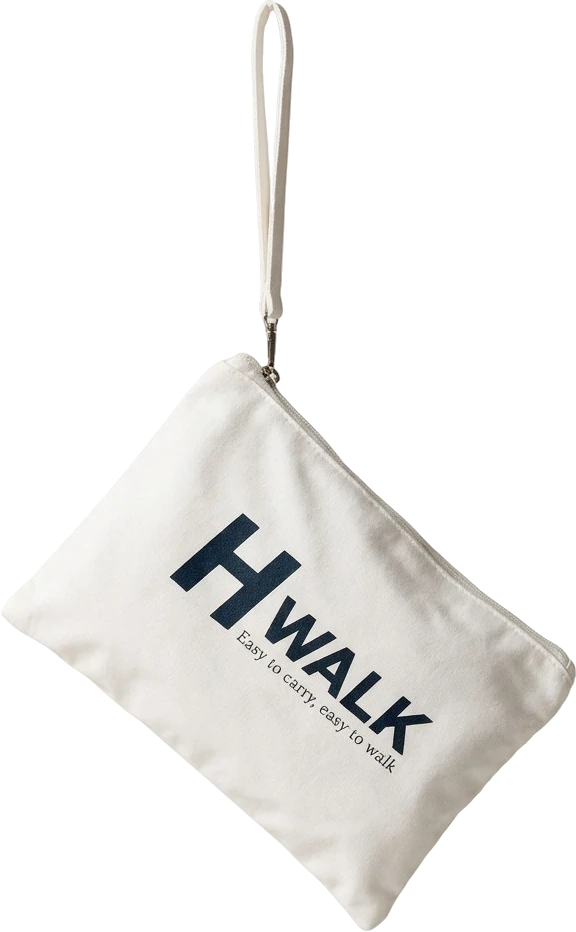
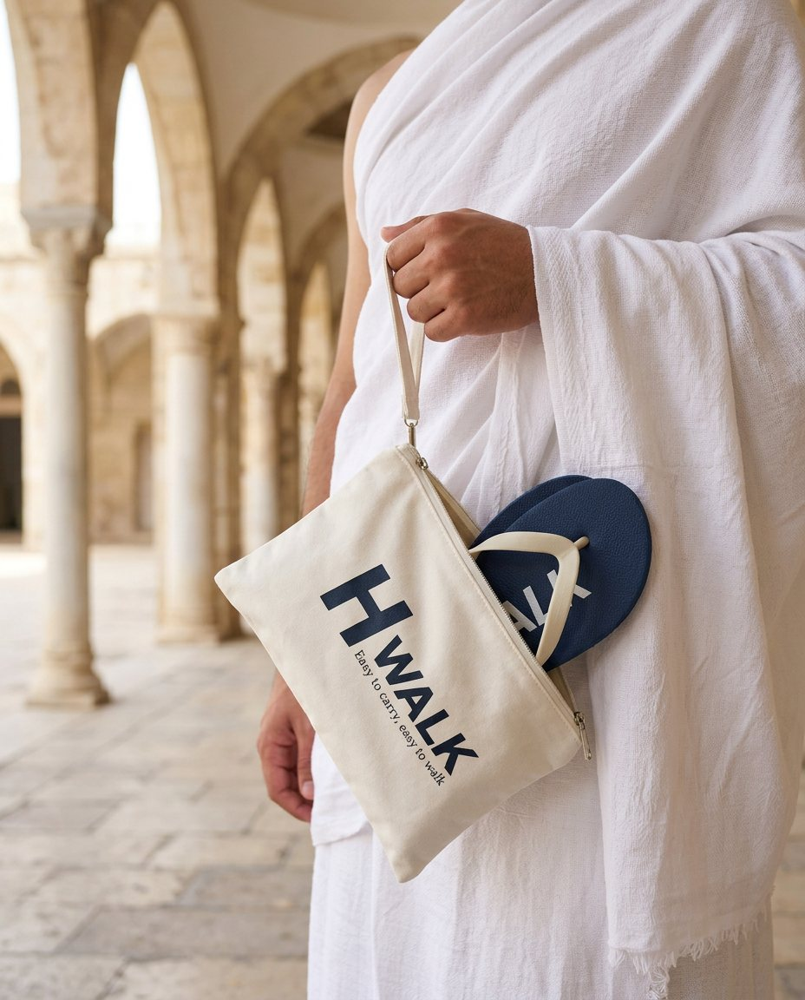
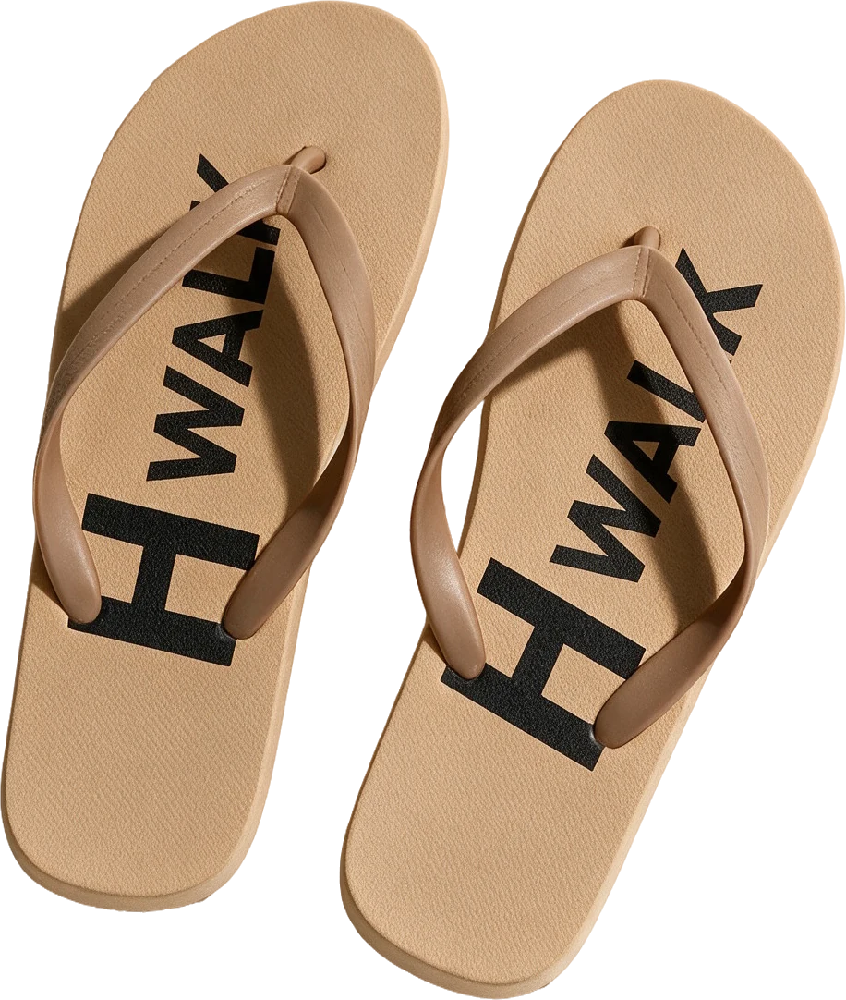
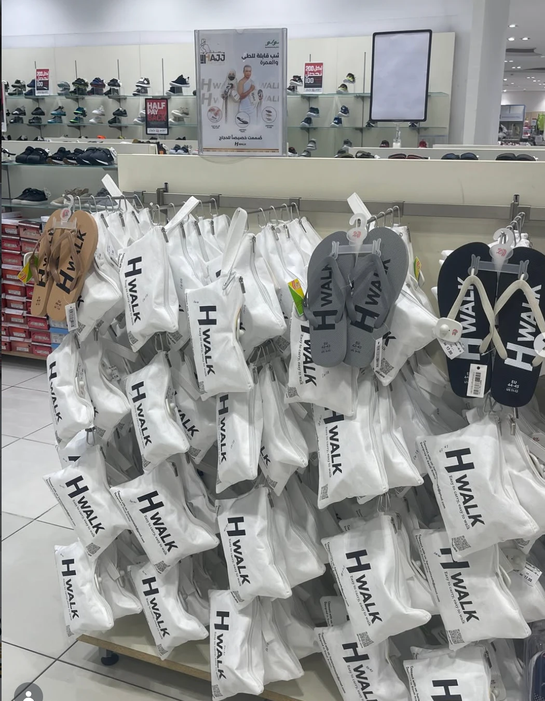

01Before you begin
Ihramالإحرام
Open at the heel and toe, leaving the ankles uncovered, as Ihram asks.
Fold-01 · Sand
Three layers, each with one job, built for the long walks of Tawaf and Sa'i.
A soft, flexible thong that holds the foot without rubbing.
A soft foam bed that settles to the shape of your step.
Deep-tread rubber that keeps its hold on polished marble.
For the Guests of Rahman
Millions of steps. One journey of a lifetime. A pair of slippers that walks every one of them with you, and never gets left at the door.
ضيوف الرحمن · خطوة بخطوةThe journey
01 / 06
01Before you begin
Open at the heel and toe, leaving the ankles uncovered, as Ihram asks.
02Masjid Al-Haram
Seven circuits on cool marble, among thousands of others.

03Safa to Marwah
Seven laps between Safa and Marwah, light underfoot the whole way.
04The tent city
Days in the tents, slipping on and off at every door.
05The day of standing
The great day of standing, from noon until sunset.
06Under the sky
A night under the sky, then the long walk to the Jamarat.
One pair
And at every masjid door, it folds into your hand.
SEE HOW ↓The pouch · every pair comes in one
1pouch in
every pack

Thousands of pairs wait at every door of the Haram.
Yours is in your hand.Walk out with your own pair, without searching the racks.
On the walk

From the first Tawaf to the last farewell, H WALK is made for the hours of walking that Hajj and Umrah ask of you: on marble, stone and asphalt, in the heat of the day and the cool of the night.صُممت خصيصاً للحجاج والمعتمرين

Three colours
Each family member picks a colour, so every pair is easy to tell apart at the end of a long day.
01EU 38 – 45

02EU 38 – 45

03EU 38 – 45

Where to buy · أين تجده
